Resolution Rule for Disjunction:

Resolution Rule for Disjunction:
 Example with alternate Disjunction:
Example with alternate Disjunction:
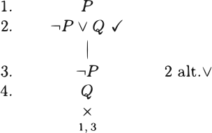
Resolution Rule for Conjunction:
Resolution Rule for Negated Conjunction:
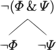
Resolution Rule for Negated Disjunction:
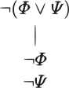
Resolution Rule for Conditional:
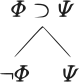
Resolution Rule for Negated Conditional:
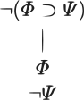
Resolution Rule for BiConditional:
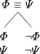
Resolution Rule for negated BiConditional:
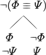
Resolution Rule for negations:
Example with conjunction:
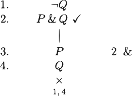
Alternative Conjunction Rule:
Example with Alternative conjunction:
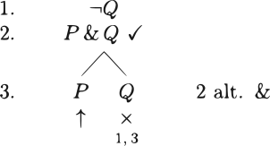
Example with Alternative Disjunction 2:
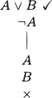
Second alternate conjunction
Example with Alternative conjunction:
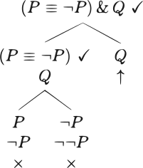
Example with Alternative conjunction:
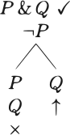
Exercise:
Exercise:
Exercise:
Exercise:
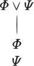
Exercise:
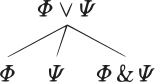
Exercise:
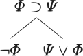
Exercise:
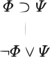
Exercise:
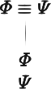
Exercise:
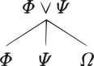